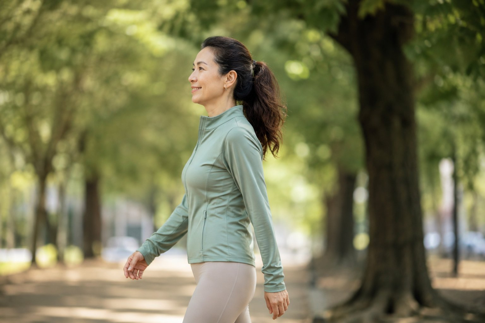

走路也看得出體態？從你的日常步態，讀懂身體的用力習慣與關節代償

- 走路是全身體態的一場動態即時演出，骨盆高低、足底重心分配與肩膀擺動，都會在每一步中無所遁形。
- 常見步態代償：頭前探急著趕路、左右內外八字腳、骨盆左右搖擺晃動、拖著腳步踏地前行。
- 步態訊號是身體代償的客觀提醒而非疾病診斷，多數源自臀中肌無力、足弓彈性下降與核心失衡。
- 「怎麼走」遠比「走多少」重要；帶著歪斜代償走一萬步，只會加深關節磨損，先校準骨骼力線才是長遠之道。
我們每天都要邁開雙腳走上數千步，從通勤趕車、採買散步到辦公室穿梭，卻極少有人停下腳步仔細思考過：「我平時走路時，整個身體究竟呈現什麼樣的姿態？」事實上，走路絕非只是雙腿的孤立擺動，而是全身體態力線最誠實的動態即時演出。骨盆有沒有保持水平、單腳著地時重心壓在哪裡、肩膀是否左右晃動代償，全部在日常的每一步中表露無遺。這篇文章為你剖析常見的步態代償訊號，以及為什麼學會「走對力線」遠比盲目追求「每日步數」更有價值。
走路，是全身關節協同完成的精密力學
許多人誤以為走路只牽涉到腳掌和小腿，但人體生物力學告訴我們，完整的步態週期（Gait Cycle）涵蓋了從足跟觸地、全掌支撐、足尖推蹬，到擺動期跨步的連續動態。在此過程中，下肢的各個關節必須精密配合：足弓吸收著地衝擊、踝關節調節背屈、膝關節微彎緩衝、骨盆在臀中肌的支撐下維持水平穩定，胸腔與雙臂則順應步幅進行對稱的反向旋轉以抵消軀幹旋轉力矩。只要其中任何一個環節活動度不足或肌力疲乏，大腦便會立刻在其他關節尋求「借力代償」，走路的姿態便隨之改變。
如果請家人或朋友隨手用手機在側後方錄下你走路時的 10 秒影片，多數人看完後都會大吃一驚：「天啊，原來我走路時頭往前伸得那麼誇張、整個身體都在左右搖晃！」因為行走是神經系統的自動化反射，它比刻意站好拍照更能毫無保留地反映出身體最底層的代償慣性。
四個常見的步態代償訊號與力學意義
- 含胸駝背、頭部前探急煞步態：走路時重心完全被頭部帶向前方，身體像隨時處在往前仆倒的狀態。這會迫使下背豎脊肌與小腿腓腸肌在每一步著地時都要大力「剎車拉住身體」，造成走沒多久下背與小腿就極度痠痛發脹。
- 內八字或外八字腳步：雙腳朝向異常往往不是腳踝本身的問題。外八步態常反映出骨盆底緊繃、足弓塌陷或臀肌深層外旋肌群過緊；內八則常與股骨內旋或骨盆前傾密切連動，長期會造成髕骨軌跡偏移與膝關節異常磨損。
- 骨盆左右大幅搖晃（Trendelenburg 步態代償）：單腳站立推進時，若支撐腳的臀中肌無力支撐骨盆，對側骨盆就會向下墜落，身體被迫向支撐側大幅傾斜晃動以防跌倒。這種「像鴨子般左右晃動」的走姿，是導致單側腰痛與退化性髖關節炎的隱形推手。
- 拖著腳步走、步幅狹小且鞋尖常擦地：深層核心與髖屈肌（如腰大肌）怠工，導致下肢無法輕盈前跨抬離地面，整個人只能靠著重力向前「拖步拖鞋」，長年下來不僅鞋尖磨損劇烈，在熟齡階段更大大增加了踩空絆倒的風險。
為什麼「怎麼走」比「走多少步」更重要？
健走無疑是一項有益心肺的日常運動。然而，如果身體結構已經存在骨盆側傾、足弓塌陷或長短腳代償，在錯誤的力學排列下強迫自己日行萬步，實質上等於是「將損害關節的代償動作在一天內重複了一萬次」。這正解釋了為什麼許多原本熱愛散步的朋友，走著走著反而膝蓋髕骨開始刺痛、足底筋膜發炎、下背越來越僵硬。運動保健的核心邏輯應該是：先透過體態調整將骨骼力線理順、喚醒穩定肌群，讓每一步都走在正確平衡的軸線上，健走才能真正發揮強身健體的神奇功效。
想看清自己靜態站立時的身體力線與骨盆平衡嗎？
動態步態的失衡，其根本往往源自於靜態站姿的代償累積。AI 體態檢測運用 2D 體態幾何參考線，客觀量化耳肩垂線偏移、高低肩與骨盆側傾度數，由資深老師當面解讀，帶你找出影響步伐流暢度的深層關鍵。
預約首次 NT$299 AI 體態檢測日常行走時，你可以落實的三個微調提醒
在日常散步或通勤時，試著在心中默默啟動三個溫和的身體覺察：
1. 視線平視前方遠處：想像後腦勺輕輕帶起整個頭頸回到肩膀上方，避免低頭盯著腳尖。
2. 雙肩自然下沉微後展：讓雙臂自肩關節對稱自然擺動，促進胸椎產生自然溫和的微幅旋轉。
3. 感受腳跟平穩過渡至腳趾推進：有意識地讓腳掌像車輪般順暢滾動著地，由大腳趾球穩穩蹬地出發。
想了解足弓地基如何牽動全身力線，請接著看：腳是體態的地基：鞋子與足弓如何牽動全身骨盆脊椎；熟齡行走不穩的穩定力保養，請見：中年後站不太穩、單腳穿褲子會晃？談身體平衡感與防跌穩定力。
本文為體態與日常動作習慣的一般衛教分享，非醫療診斷或治療。若走路時出現突發性單側肢體無力、腳尖無法抬起（垂足）、關節嚴重劇痛或經常性失去平衡跌倒，請及時就醫尋求神經專科或復健專科醫師進行完整醫療評估。
常見問題
為什麼走路的姿勢能夠反映全身體態的問題？
走路是全身性動態動力鏈的綜合展現。從腳跟著地、全掌支撐到大腳趾推進，力量需平穩傳導至腳踝、膝蓋、髖關節與骨盆，同時上半身需藉由核心微旋轉與肩臂擺動來平衡軀幹。只要骨盆、足弓或肩頸有任何一處肌力失衡或活動度受限，大腦就會在每一步中調動其他關節代償，使走路步態成為體態問題最真實的動態鏡像。
走路時骨盆大幅左右晃動（像鴨子走路）是什麼原因？
這種現象在醫學與運動力學上常與單側或雙側「臀中肌無力」有關（類似 Trendelenburg 步態代償）。當右腳單腳站立支撐、左腳向前跨步時，若右側臀中肌缺乏足夠的力量抓住骨盆，懸空的左側骨盆就會向下墜落；為了不跌倒，上半身只能本能地大幅向右側傾斜代償，長期下來會造成腰椎單側劇烈剪力與髖關節慢性磨損。
走路時習慣內八或外八字腳，會對膝關節造成什麼傷害？
外八步態常伴隨足弓塌陷或髖關節外旋肌緊繃，每一步推蹬時會使膝關節內側副韌帶與半月板承受過大的外翻扭力；內八步態則常見於大腿股骨內旋或脛骨內扭，容易增加髕骨外側關節面的摩擦應力。長期維持極端內外八行走，膝蓋容易提前出現痠痛、卡卡不適等退化徵兆。
為什麼「怎麼走」比「一天堅持走一萬步」更關鍵？
如果身體已經存在骨盆前傾、高低髖或膝內扣等代償，在缺乏正確排列的情況下每天強行日行萬步，等於將錯誤的關節磨損模式重複了一萬次，走得越多，下背與膝關節累積的微創傷反而越深。唯有先將靜態排列與核心穩定度理順，讓每一步都走在正確的力線上，走路才能真正發揮促進健康的價值。
日常行走時，有什麼可以隨時自我提醒的微調要領？
三個實用微調要領：第一，「視線看向前方遠處水平線」，避免低頭滑手機使頭部前探；第二，「雙肩自然放鬆向後向下展開」，讓雙臂在身體兩側自然對稱前後擺動；第三，「感受腳跟平穩著地後、重量流暢過渡至大腳趾球蹬出」，避免拖著腳掌著地。微調在於自我覺察，不需刻意死板僵硬用力。